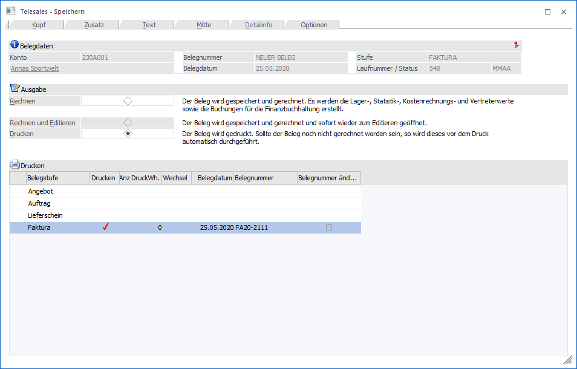

Nach Abschluss der Erfassungsarbeiten kann die Bearbeitung nach Drücken der OK-Taste (Maus oder F5) mit folgenden Optionen abgeschlossen werden:

Ø Rechnen
Nach Bestätigen der Option "Rechnen" wird der Beleg neu durchgerechnet und die Daten in die Datenbank zurückgeschrieben, d.h. alle an den Belegdruck angeschlossenen Bereiche werden aktualisiert. Es erfolgt allerdings kein Ausdruck des Formulars. Alle gerechneten Belege können zu jedem beliebigen Zeitpunkt über den Menüpunkt Erfassen/Belegdruck gedruckt werden.
Ø Rechnen und Editieren
Diese Option kann nur dann verwendet werden, wenn ein Teillieferschein aus einem bereits gedruckten Auftrag erzeugt wird. Wenn diese Option gewählt wird, dann wird im Hintergrund der Lieferschein erzeugt und sofort zum Editieren nochmals geöffnet. Damit ist es möglich, im Lieferschein Informationen zu hinterlegen (z.B. Ändern von Textbausteinen), die nicht in den ursprünglichen Auftrag zurückgeschrieben werden. In diesem Beleg können nur die Aktionen durchgeführt werden, die auch beim "normalen" Lieferschein-Editieren möglich sind (d.h. es können keine Mengenänderung bei HSL-Artikel durchgeführt werden, es kann kein Austausch von Ausprägungsartikel gemacht werden).
Ø Drucken
Wurde der Beleg noch nicht mit Rechnen in die Datenbank zurückgeschrieben, geschieht dies bei Bestätigen der Option Drucken. Außerdem wird der Beleg auch auf dem entsprechenden Drucker ausgegeben.
Ø Tabelle
In der Tabelle werden alle Belegstufen angezeigt, die gedruckt werden.
Beispiel:
Wenn alle Liefermengen im Beleg 0 sind, wird nur der Auftrag angezeigt und gedruckt.
Sind alle Liefermengen im Beleg gleich den Bestellmengen, so wird nur der Lieferschein angezeigt und gedruckt.
Auftrag und Lieferschein werden angezeigt und gedruckt, wenn Liefer- und Bestellmengen unterschiedlich sind.
Achtung:
Ist in der Belegart ein Endmakro vorhanden ist, so wird dieses erst nach dem Druck des OK-Buttons im Speichern-Fenster expandiert. Dadurch kann es vorkommen, dass nur der Auftrag angezeigt wird, danach aber auch der Lieferschein gedruckt wird.
Beispiel:
1. Alle Liefermengen im Beleg sind 0; ein Endmakro ab Stufe Lieferschein ist vorhanden -> es wird nur der Auftrag gedruckt.
2. Alle Liefermengen im Beleg sind 0; ein Endmakro ab Stufe Auftrag ist vorhanden -> in der Tabelle wird zwar nur der Auftrag angezeigt, anschließend wird aber auch der Lieferschein gedruckt, da aufgrund des Makros jetzt auch Liefermengen vorhanden sind.
Des Weiteren können in der Tabelle noch Veränderungen bez. Belegnummer und Belegdatum, sowie des Belegdruckes vorgenommen werden.
In der, bzw. in den aktuellen Belegstufen sind folgende Eingaben möglich:
ü Belegnummer
Es wird die nächste
fortlaufende Belegnummer aus der Belegart angezeigt, die beim Druck des Beleges
vergeben werden würde. Wenn die Checkbox "Ändern" aktiviert ist, kann die
Belegnummer editiert werden.
ü Belegdatum
Hier wird das
aktuelle Datum aus dem Belegkopf angezeigt, das noch editiert werden kann.
ü Anz DruckWh.
Hier kann die
Anzahl der Druckwiederholungen eingetragen werden. (Dies ist nur möglich, wenn
in der verwendeten Belegart bei der Option Druckwiederholung "Immer ermöglichen"
eingestellt ist.)
ü Wechsel
Wenn eine
Druckwiederholung eingetragen wird, kann hier die Checkbox aktiviert werden.
Dies bedeutet, dass bei jedem Druck der Drucker-Dialog aufgeht, und ein anderer
Drucker ausgewählt werden kann.
Ø Drucken
Bei Aktivierung dieser Checkbox, können automatisch auch die Folgestufen eines Beleges gedruckt werden.
Der Folgestufendruck kann nur durchgeführt werden, wenn die Folgestufe als Druckstatus ein A eingetragen hat und die vorherige Stufe abgearbeitet ist, bzw. wenn in der Belegart der Folgestufendruck erlaubt wurde.
Achtung:
Wenn alle Liefermengen im Beleg 0 sind, wird kein Lieferschein gedruckt, auch wenn in der Belegart der Druckstatus A vorhanden ist.
Mögliche Einstellungen bei der Option Folgestufendruck in der verwendeten Belegart:
ü Option "Immer ermöglichen"
Es
können die Folgestufen die den Druckstatus A haben, durch setzen der Checkbox
"Drucken" gedruckt werden.
ü Option "Immer Drucken"
Es wird
automatisch bei den Folgestufen die den Druckstatus A haben, die Checkbox
"Drucken" gesetzt.
ü Option "Nie Drucken"
Es kann
kein Folgestufendruck ausgewählt werden, auch wenn der Druckstatus A
ist.
Ø Kopf
Durch Anwahl des Registers "Kopf" kann in die Belegerfassung zurückgekehrt werden.
Durch Drücken der F5-Taste wird die ausgewählte Aktion durchgeführt.